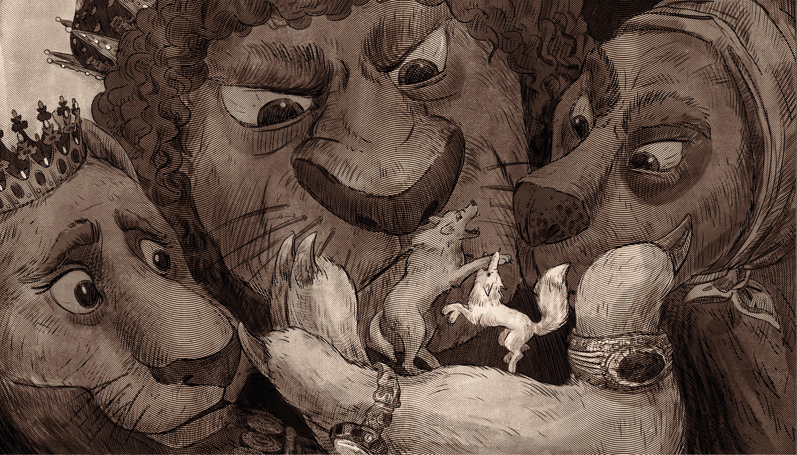
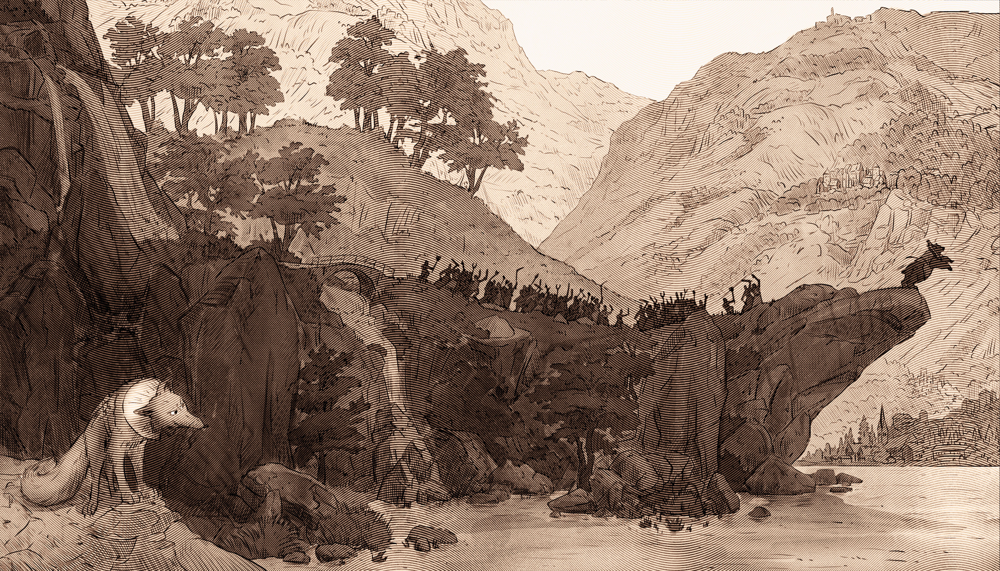
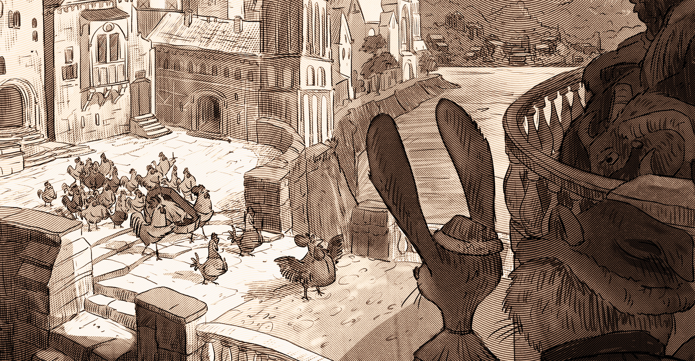

Reyneke the Fox
Costumes for the medieval trickster: fur, court cloth, and a fox who always wins.
| Title | «Рейнеке-лис» — поэма Иоганна Вольфганга Гёте (1794) |
|---|---|
| Year | 1794 |
| Field | Costume / stage |
| Description | Под масками зверей выведено феодальное общество. В центре — хитрый лис Рейнеке, который ловкостью и коварством одерживает верх над противниками и избегает наказания. Поэма представляет собой сатирическую панораму, где зло торжествует, а злодей добивается почета и власти. |

 1.jpg |  2.jpg 2.jpg |
 3.jpg |  3_1.jpg 3_1.jpg |
 3_2.jpg |  4.jpg 4.jpg |
 6.jpg 6.jpg |  7.jpg 7.jpg |